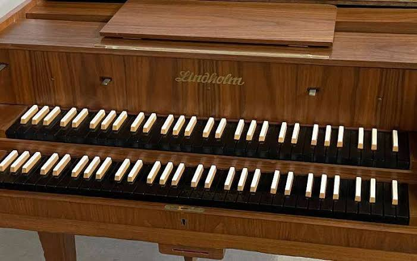
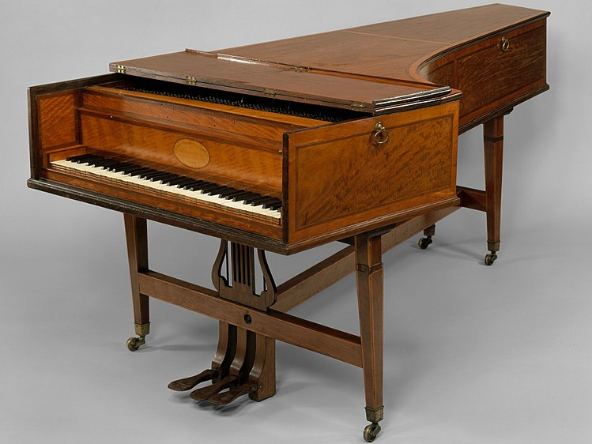
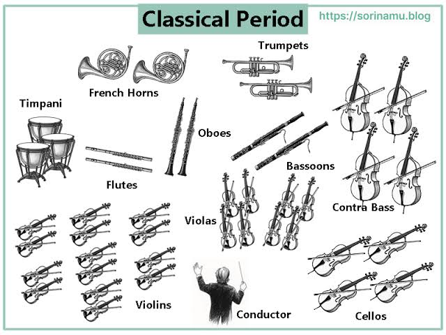

The Classical period was a time of great development in instrumental music. The new compositional style that emerged led to some Baroque instruments falling into disuse, whilst others were refined, and some new ones also appeared.
The piano
The Classical period saw the emergence of what would henceforth be known as the king of keyboard instruments: the piano. The harpsichord was replaced by an instrument called the pianoforte, whose major innovation was the ability to produce notes at different volumes depending on the force with which a key was pressed, unlike the harpsichord, which did not offer this capability. The first piano was built between 1695 and 1700 by the Italian Bartolomeo Cristofori under the name ‘gravicèmbalo col piano e forte’ (harpsichord with soft and loud sounds). Two great composers of this period, Mozart and Beethoven, went on to write important concertos for this new instrument.
 |
 |
The orchestra in the Classical period
In the Classical period, the technique of basso continuo fell out of use and, consequently, so did the harpsichord, which, as we have seen, was used as harmonic support for this technique. The emergence of the piano also contributed to this. Other instruments, such as the organ, the recorder and the lute, also ceased to be used in the orchestra. In the wind section, the clarinet made its debut, whilst the transverse flutes and horns also came to play a prominent role. The size of the orchestra increased, ranging from 30 to 50 musicians. The figure of the conductor began to take centre stage, conducting from the podium (rather than seated at the harpsichord, as in the Baroque period).
